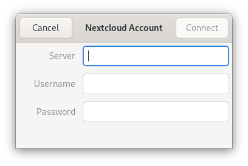

GNOME masaüstü ile eşitleme
GNOME masaüstü, Nextcloud takvimi, kişileri ve görevlerinin Evolution kişisel bilgi yöneticisi (PIM) ya da Takvim, Görevler ve Kişiler uygulamaları tarafından görüntülenmesini destekler. Benzer şekilde Dosyalar uygulaması WebDAV ile Nautilus dosya yöneticisiyle bütünleşir. Dosyalar yalnızca bilgisayar bağlantı kurmuşken kullanılabilir.
Bu işlemi yapmak için aşağıdaki adımları izleyin:
GNOME ayarlarında, çevrimiçi hesaplar bölümünü açın.
“Bir hesap ekle” altından
Nextcloudseçin:
Sunucu adresinizi, kullanıcı adınızı ve parolanızı yazın. İki adımlı doğrulamayı etkinleştirdiyseniz (2FA), bir uygulama parolası ve kodu oluşturmanız gerekir. GNOME çevrimiçi hesapları Henüz Nextcloud WebFlow ile oturum açmayı desteklemiyor (Ayrıntlı bilgi almak için):
Sonraki pencerede, GNOME tarafından hangi kaynaklara erişilebileceğini seçin ve pencereyi kapatmak için sağ üstteki çarpı simgesine basın:

Artık görevler, takvimler ve kişiler Evolution PIM uygulamasında Görevler, Kişiler ve Takvim uygulamalarındaki gibi görülebilmelidir.
Dosyalar, Nautilus dosya yöneticisinde bir WebDAV kaynağı olarak gösterilir (ayrıca GNOME dosyası açma/kaydetme pencerelerinde de görüntülenir). Belgeler, GNOME belgeleri uygulamasında kullanılabilir olur.
Ayrıca tüm kaynaklar, herhangi bir yerde Windows tuşuna basılarak ve aranacak ifade yazılarak aranabilir.